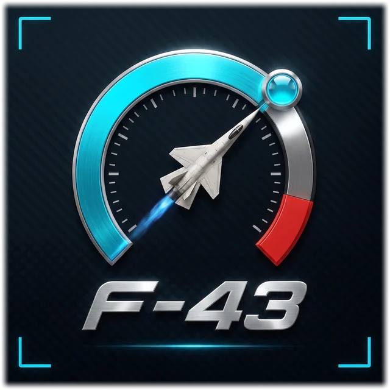

//For Android · on Google Play
The fighter-jet cockpit for your motorcycle.
F-43 Moto OS turns the Android phone on your handlebar into an instrument panel. Speed, lean and heading come from the phone itself. Plug an OBD-II adapter into your bike's diagnostic port and the cockpit reads the engine's own computer: revs, coolant, voltage, fuel trims and fault codes.
Free to download. No account, no cloud, no ads.
//Real screens
This is the app, not a mock-up.
Every screen here is a capture from a phone running F-43 Moto OS, with the app's demo data standing in for a bike.

Speed, estimated gear, the rev gauge and engine tiles on one screen. Health checks, coolant and fuel left sit beside the speed.

Above walking pace the screen declutters into a flight display: speed tape, artificial horizon and revs. Warnings still reach you, like this coolant alert.

Twin needle dials, speed and revs, with the engine data between them.

A swept rev band across the top and ground speed in the middle, for the open road.

Pick the instruments you ride with. BLADES, CLUSTER, MONOLITH, STRIP and CLASSIC are free.

ARC, BAR, NEON, LED, NEEDLE and HYPER are free. HUD, TURBINE, VECTOR, NOZZLE and RADAR come with Pro.

Stored engine faults in plain language, with the checks to do next. Always free.
Swipe for more screens.
//Setup
From the box to the road
-
Mount the phone
Put your Android phone on the handlebar, in landscape. Speed, the artificial horizon and the compass work straight away, from the phone's own sensors.
-
Plug in an adapter
Plug an OBD-II Bluetooth adapter into your bike's diagnostic port and pair it once. The cockpit now reads the engine's computer: revs, coolant, voltage, fuel trims and fault codes.
-
Pick your bike
Choose from 54 India-spec presets or add your own. Switch on, the needles sweep, six lamps light and go out, and you're cleared.
Set it up before you ride. Hands on the bars, eyes on the road.
//Pre-flight checklist
What's free, and what's Pro
Safety features and fault codes are free for every rider. F-43 Pro adds deeper analysis and more instruments.
Free Always
Everything you need to ride with your bike's data in view.
- CockpitSpeed, estimated gear and engine tiles, with six rev gauge styles.
- Horizon and compassBank, pitch and heading from the phone's sensors. No adapter needed.
- RIDE modeThe screen declutters above walking pace. Five RIDE faces.
- Fault codesRead and clear, in plain language, with freeze frame, readiness monitors and Bus Scan.
- Crash detectionCounts down, then opens a ready-to-send SOS text with your location for your emergency contacts.
- Mayday and warningsA one-tap MAYDAY button, priority warnings and guided multimeter tests.
- Logs and navigationFuel, service and chain logs, a trip computer, and turn-by-turn navigation on OpenStreetMap.
- Mission CompleteAfter a ride, your route draws itself and the stats count up.
F-43 Pro One-time unlock
No subscription. A 7-day trial of everything starts the first time your bike connects.
- ECU ReportThe engine computer's own self-tests: misfire counters, O2 sensor response, fuelling and charging.
- Live AnalysisLong-window wear checks and a guided idle test.
- Learn your bikeFinds what your bike broadcasts on its CAN bus, one signal at a time, and shows you before it saves.
- CAN snifferEvery ID and byte, with mark, filter and save.
- More instrumentsFive more RIDE faces, five more rev gauges and six more HYPER colourways.
- Flight DebriefA share card for every ride, plus Dyno and Flight Recorder.
- Voice guidanceSpoken navigation and the nav radar scope.
- GarageMore than one bike, each with its own logs.
Engine data, fault codes and the ECU Report need an OBD-II adapter. What Learn your bike can find depends on what your bike broadcasts. Navigation and weather need a data connection.
No account. No cloud. No ads. No analytics.
Your rides, logs and bike data stay on your phone. Read the privacy policy.

Cleared for take-off.
F-43 Moto OS, on Google Play.